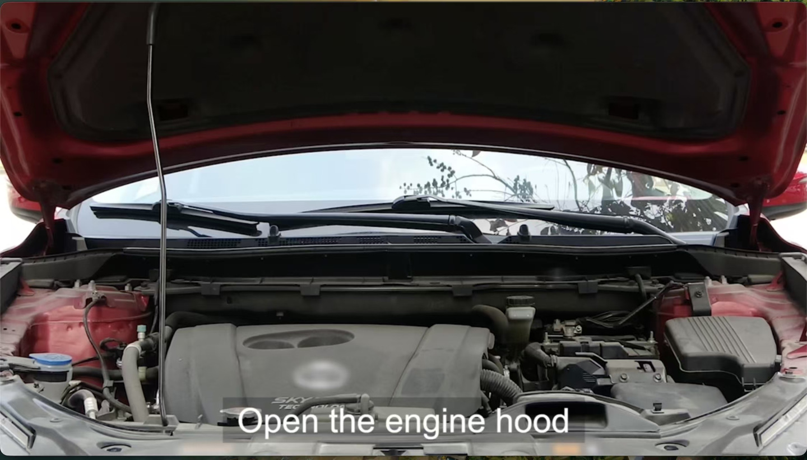
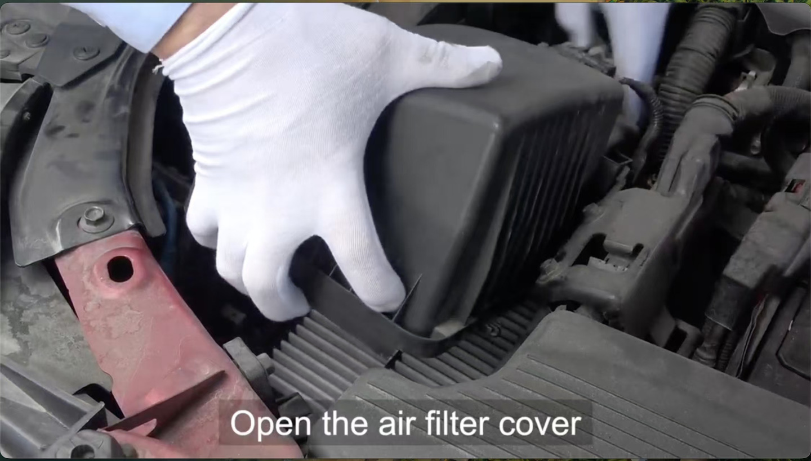
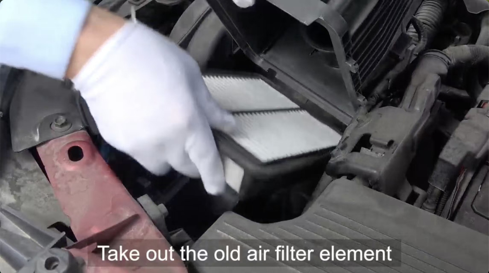
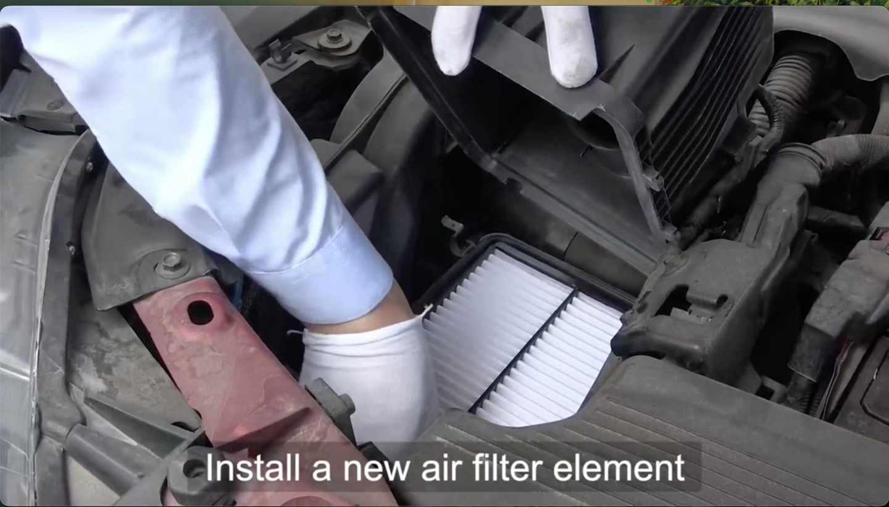
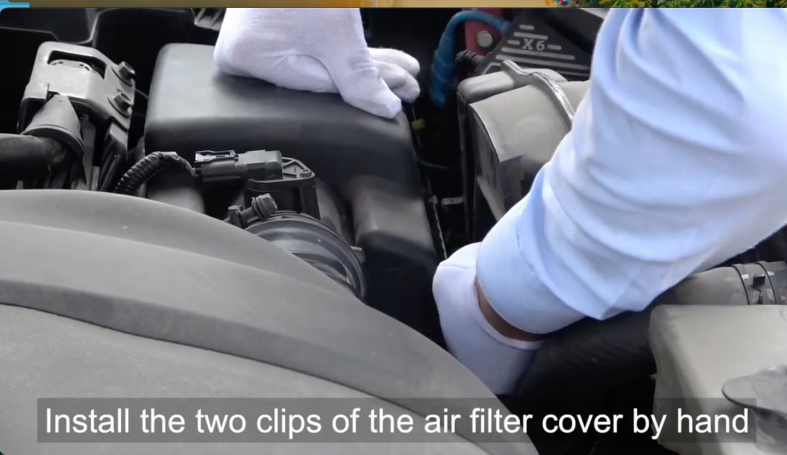

GV-EF-001 · Installation guide
Engine filter installation.
Review the complete video and your vehicle owner’s manual before beginning. Confirm the listed application and stop if the replacement does not match the removed part.
Watch installation video
Step 1
Open the hood
Locate the engine air filter housing.

Step 2
Open the filter housing
Release the fasteners and open the housing as shown.

Step 3
Remove the existing filter
Lift out the existing engine air filter.

Step 4
Install the replacement
Seat the replacement in the housing as shown in the video.

Step 5
Close and secure the housing
Refit the cover and secure its fasteners.
Step 6
Close the hood
Complete the final checks before closing the hood.
Need help before continuing?
Send your product number, vehicle details and a description of your question.
Contact Product Support